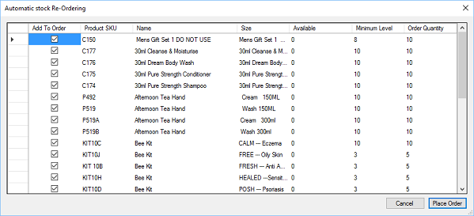

Stock can be automatically re-ordered at any time, select the auto stock re-order option.  All stock items that have stock below the minimum stock level will be displayed, along with the
total available and Minimum Level. The order quantity is initially based on the Minimum Level and goes up in multiples of the stock
items’ order quantity. You can change the Order Quantity if required. Once the correct quantities are set click Place Order, this will create an order with Head Office. There is no option to pay for the goods during this process, instead head office should be
contacted to complete the order. Please see the section on Settings for details of how to configure auto stock re-order.